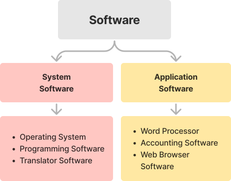
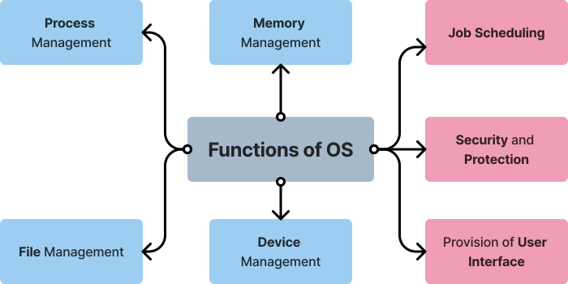

I. New Words
| 1. interdependent | 2. distribution | 3. portability | 4. compatibility | 5. interface |
| 6. management | 7. character | 8. graphical | 9. interaction | 10. multimedia |
II. FAI
III. Tech Vocabulary
- Cache : Cache is the hardware or software that is used to store something, usually data, temporarily in a computing environment.
- User Interface : An interface refers to the mode through which the user and the computer system interact, primarily using input and output devices.
IV. Definitions
-
Hardware : It is the collection of physical elements that constitute a computer system.
Eg. Processing devices, Storage devices, Logical circuits, I/O devices, etc. -
Software : It is the collection of predefined programs designed to perform a well defined task.
-
GO on types of Software
 -
Operating System : It is a system software which
consists of programs and data that are required to manage the
computer hardware resources. It acts as an interface between the
user and the computer hardware.
Eg. Microsoft Windows, Apple's macOS, iOS, Linux etc. - Booting : The process of turning on a computer and loading the operating system into the RAM.
V. Important Points
-
Types of Operating System:
Types of OS Purpose Examples Single-User, Single-Tasking OS It is designed for single user to perform a single task. It is the initial version of the operating system. Microsoft DOS, Palm OS Single User, Multi-Tasking OS It is designed to support one user at a time and has capability to run more than one program simultaneously. Windows, Linux, macOS etc. Multi-User OS It is designed to allow multiple users to access applications or resources that are running on a single network server. MainframeOS, Virtual Memory System(VMS) Real Time OS Provides a required level of service in a bounded response time. Windows, Linux Distributed OS Runs on a set of computers that are interconnected by a network. Linux and Windows -
Differentiate between CUI and GUI:
CUI GUI a. In CUI(Character User Interface, the user has to type commands using the keyboard to interact with the computer. In GUI(Graphical User Interface), the user uses a mouse instead of the keyboard to interact with the computer. b. It is difficult to use as the user has to remember all the commands. It is much easier to use and navigate. c. There is only text in case of CUI. Old computers used CUI. Ex: DOS There are graphics or visual clues for each application. Most modern computers are GUI. Ex: Windows -
GO on functions of an operating system:

VI. Home Assignment
- Write a short note on Process and Memory Management
- Write a short note on File and Device Management
FAII
- Define
- List out
- Differentiate between
- Write a short note on
Chart Work
- Prepare a chart on “Examples of operating systems for computers and for mobiles” with pictures.
- Prepare a chart on Functions of OS and Types of OS.
- CUI and GUI with pictures